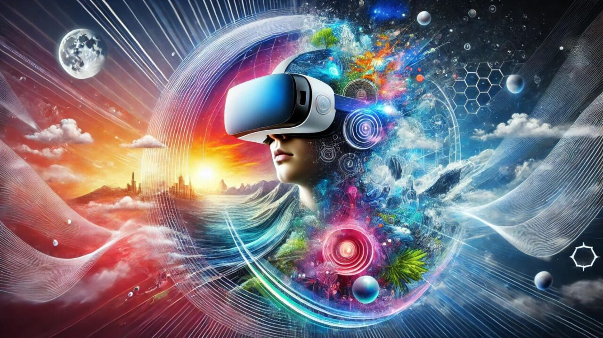

Virtual Reality (VR) is one of the most exciting and transformative technologies of the modern age. By immersing users in a completely virtual world, VR opens up endless possibilities, from gaming and entertainment to education, healthcare, and beyond. In this blog, we'll explore what virtual reality is, how it works, and the impact it's having on various industries.
What is VR? How it Works Applications Future of VR Motion TrackingVirtual Reality (VR) is a simulated experience that can either mirror the real world or create a completely new and immersive environment. Unlike traditional interfaces, VR places the user inside an experience. Instead of viewing a screen in front of them, users are immersed in 3D worlds, interacting with the environment in a way that feels natural.
Here are the key features of virtual reality:
The magic of VR lies in its ability to trick the brain into perceiving a virtual environment as reality. This is achieved through several technologies working together:
The VR headset is the most critical piece of equipment. It displays stereoscopic images to create depth perception and tracks the user’s head movements, allowing the environment to change based on where the user is looking.
Motion tracking enables the system to track the user's movements in 3D space. It includes head, hand, and sometimes body movement to create a highly interactive experience.
Hand controllers, gloves, or other input devices are used to interact with objects in the virtual world, enhancing the overall immersive experience.

VR is being used across various industries. Here are some of its key applications:
VR is constantly evolving. The future holds incredible promise with advancements in technologies like Mixed Reality (MR), where virtual objects integrate seamlessly with the real world, and faster data processing with 5G networks, enabling more realistic and interactive VR experiences.
Content and research by [Harshdeep Singh]